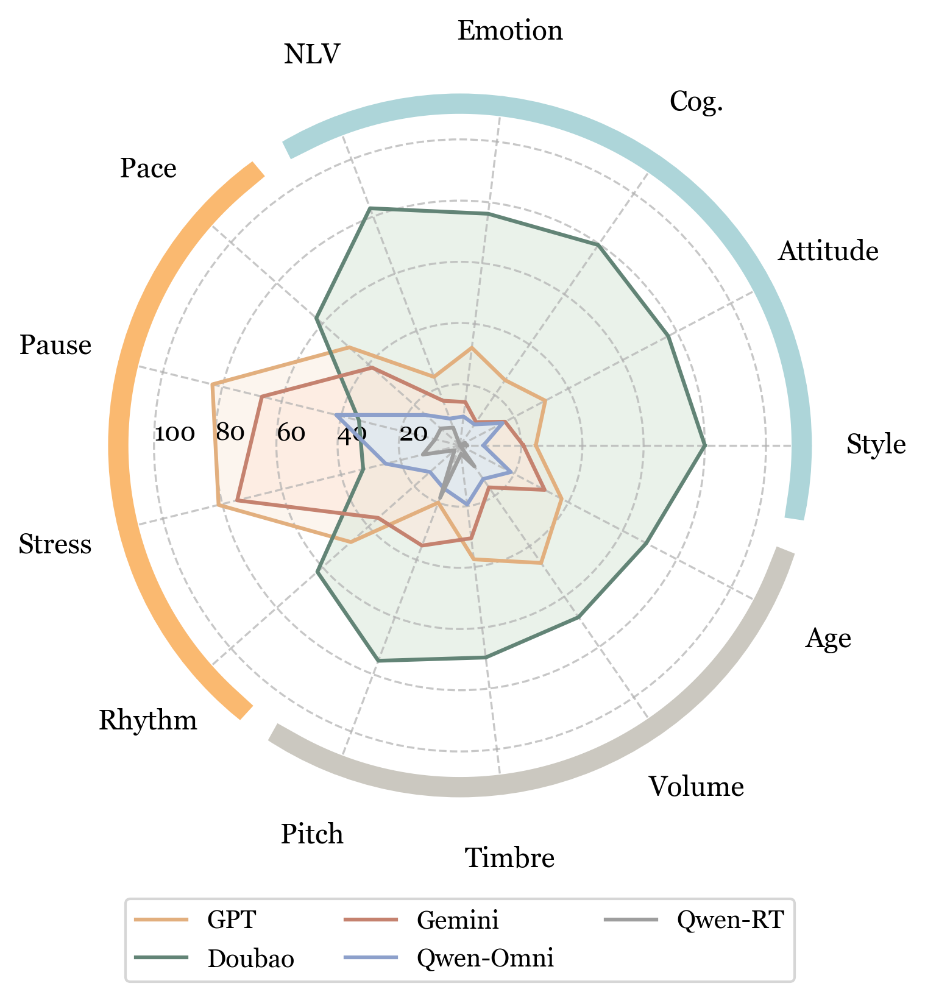

Benchmark
Dataset Statistics
| Dimension | Chinese Samples | English Samples | Description |
|---|---|---|---|
| DynVar (Dynamic Variation) | 120 | 120 | Models' ability to dynamically adjust paralinguistic features |
| ParaCon (Paralanguage Control) | 691 | 691 | Single & multi-dimensional paralinguistic generation |
| SitAda (Situational Adaptation) | 190 | 190 | Context-aware empathetic speech generation |
| Total | 1001 | 1001 |
Evaluation Dimensions
Paralanguage Control
Evaluates single-dimensional and multi-dimensional paralinguistic information generation capabilities
Dynamic Variation
Assesses models' ability to dynamically adjust paralinguistic features over time
Situational Adaptation
Tests situational empathy and context-appropriate paralinguistic expression
Data Composition


Performance across different task types